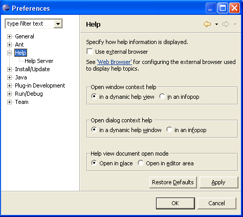

Many of the images found in the Eclipse documentation have been taken using the Windows XP Manifest, giving them the default Windows XP look. The Windows XP Manifest affects the look and feel of the Eclipse platform, rounding out otherwise blunt edges of boxes and buttons, as can be seen in the following examples.
Screenshot of the Help Preferences page without the Windows XP Manifest.

Screenshot of Help Preferences page with the Windows XP Manifest.
If you would like to use the Windows XP Manifest on your installation simply
place the javaw.exe.manifest file in the same directory as your java.exe executable.
The javaw.exe.manifest file can be found in org.eclipse.swt.win32.win32.x86_3.1.0.jar.